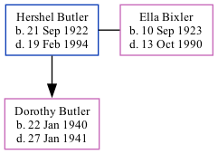

Hershel Henry Butler 1922 - 1994
[ Home ] | [ Calendar ] | [ Surnames Index ] | [ Family History ], Hershel Butler, the husband of Ella Louise Bixler (the fifth cousin once-removed on the mother's side of Nigel Horne), was born in Clay City, Clay, Indiana, USA on Sep 21, 19221,2 and married Ella (with whom he had 1 child, Dorothy Louise) in Brazil, Clay, Indiana, USA on Oct 4, 19394. On Apr 1, 1940, he lived in Morgan, Owen, Indiana5.
He died on Feb 19, 1994 in Harrells, Bladen, North Carolina, USA1,3.
Children
- Dorothy Louise was born on Jan 22, 1940
Citations
- Social Security Death Index - Findmypast
- United States Marriages - Findmypast
- North Carolina, Deaths, 1931-1994 - Findmypast
- Indiana, Marriages, 1810-2001
- US Census 1940 - Findmypast (was age 17 and the head of the household)
Media
United States Marriages - FS/MAR/40537261/1
Social Security Death Index - USBMD/SSDI/311180656
North Carolina, Deaths, 1931-1994 - R_20621933800
Family Tree
Generated by Ged2Site. Last updated on Jul 20, 2025